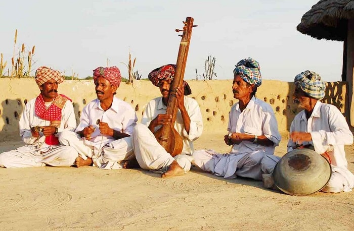
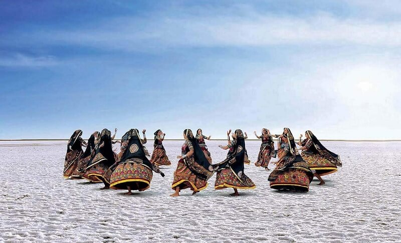
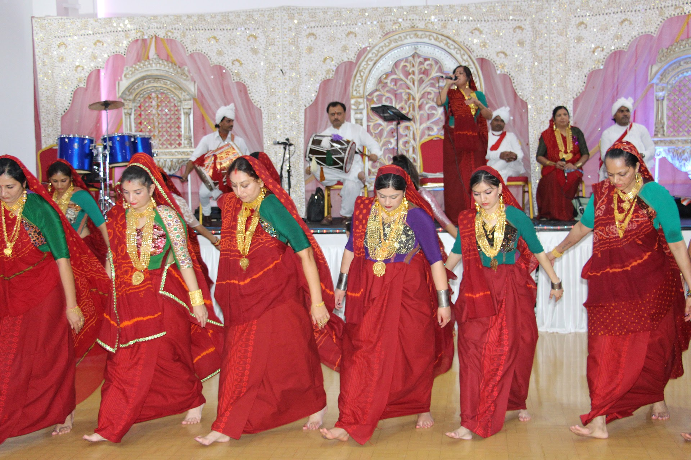
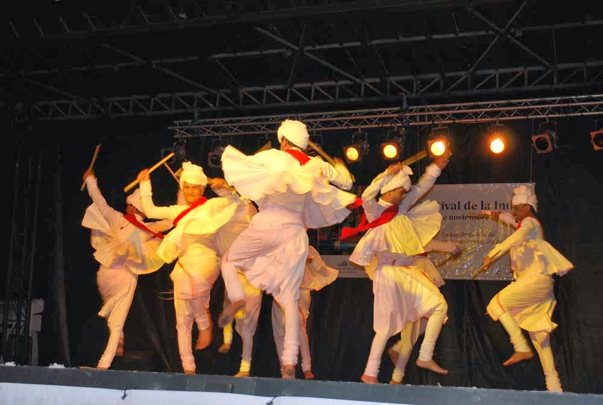
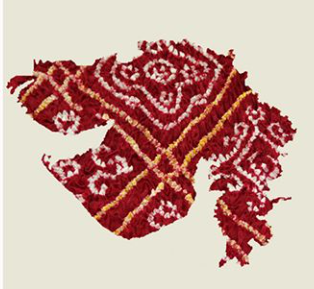

About Gujarat
Discover the colors of Gujarat!
Introduction
Gujarat is one of India’s most vibrant states, located on the western coast. It’s known for its rich culture, glorious history, strong industries, and warm hospitality. The state offers stunning natural beauty, from the white salt desert of the Rann of Kutch to the lush Gir National Park, home to Asiatic lions. Gujarat is also famous for its historic temples, bustling cities, colorful festivals like Navratri, and iconic landmarks such as the Statue of Unity. Whether you are exploring heritage sites, wildlife, or local crafts, Gujarat has something unique for every traveler.
Quick Facts About Gujarat
Capital
Gandhinagar
Largest City
Ahemdabad
Formation Day
1st may, 1960
Language
Gujarati
Nick Name
Jewel of Western India
Famous Landmark
Statue of Unity
Geographical Information
Culture & Traditions







Gujarat is known for its colorful culture and joyful spirit. People celebrate festivals like Navratri with Garba and Dandiya, wear vibrant traditional clothes, and enjoy delicious foods like Dhokla, Thepla, and Fafda. The state is also famous for its beautiful Bandhani fabrics, mirror work, and handicrafts, which reflect its rich heritage and creativity.
Economy & Industry Section
Diamonds Surat
Largest diamond cutting and polishing hub in India.
Industries VadodaraAhemdabad
Textiles, chemicals, machinery, and manufacturing sectors.
Agriculture
Largest production of Cotton, groundnut, sugarcane, and other crops.
Ports KandlaMundra
Facilitate imports and exports for global trade.
Achievements / Interesting Facts
Do You Know?
World's Tallest Statue
Gujarat is home to the Statue of Unity, standing at 182 meters (597 feet), the world's tallest statue dedicated to Sardar Vallabhbhai Patel.
Solar Power Leader
Gujarat hosts Asia's largest solar park in Charanka with a capacity of 690 MW, making it a pioneer in renewable energy
Last Abode of Asiatic Lions
The Gir National Park in Gujarat is the only natural habitat of the endangered Asiatic Lions, with a population of over 600 lions.
Rich Heritage Sites
Gujarat boasts 4 UNESCO World Heritage Sites including the historic city of Ahmedabad, Champaner-Pavagadh, Rani ki Vav, and Patan.
Economic Powerhouse
Contributing 7.6% to India's GDP, Gujarat is one of the most industrialized states with the longest coastline of 1,600 km.
Birthplace of Mahatma Gandhi
Gujarat is the birthplace of Mahatma Gandhi in Porbandar, and his ashram in Ahmedabad played a pivotal role in India's freedom struggle.
Ancient Indus Valley Civilization
Gujarat was home to important sites of the Indus Valley Civilization, including Lothal and Dholavira, dating back to 2400 BCE.
White Desert Wonder
The Rann of Kutch is the world's largest salt desert, hosting the vibrant Rann Utsav that attracts visitors from around the globe.